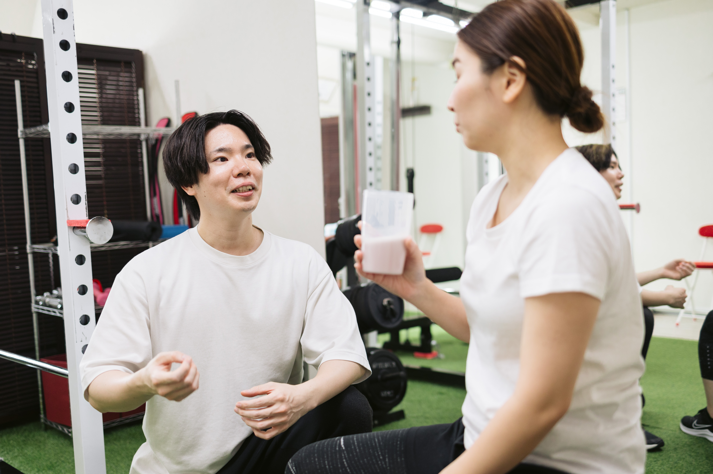
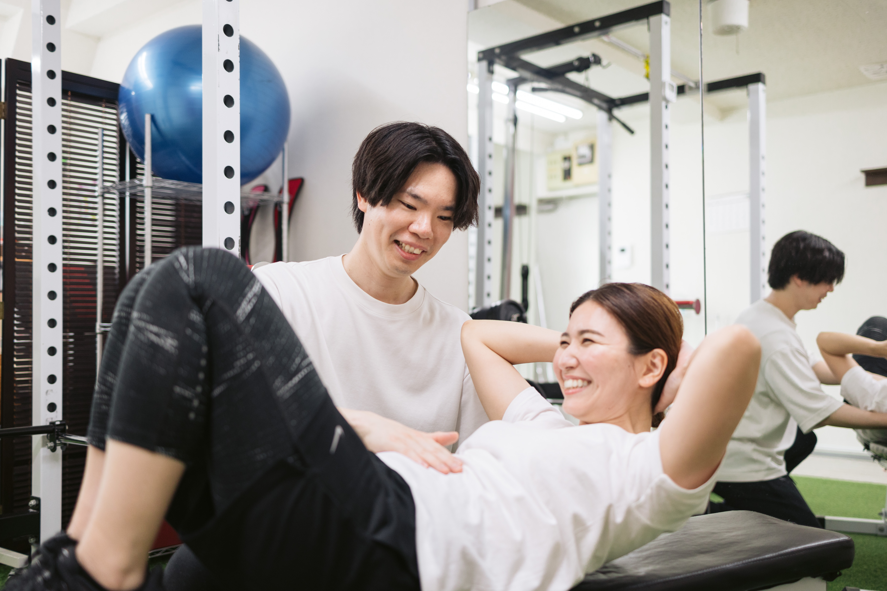
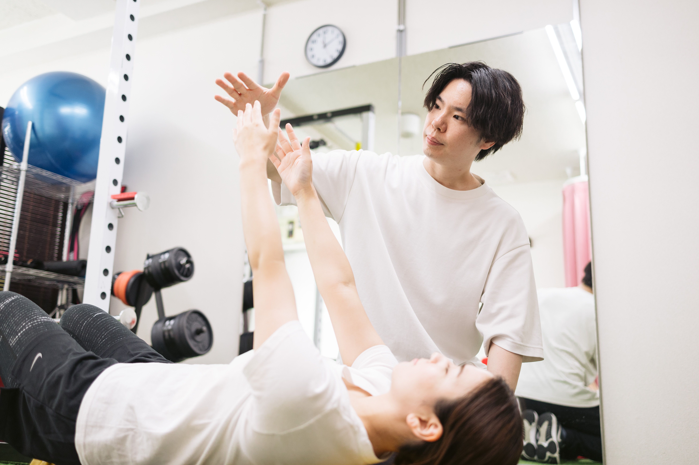
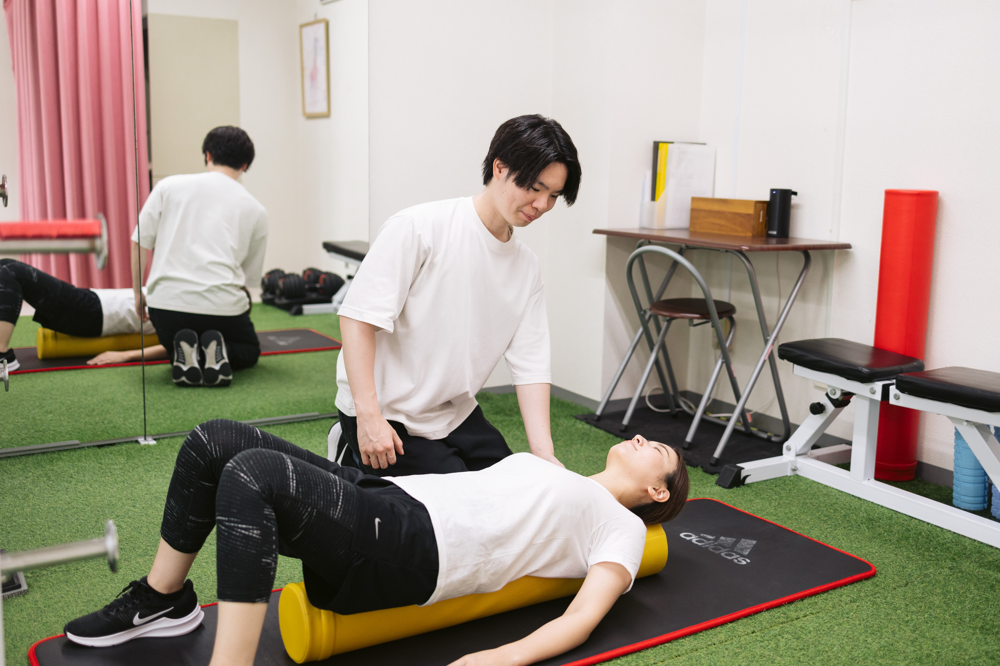
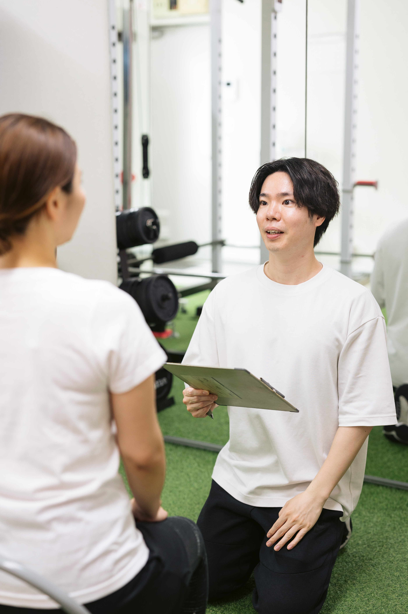

支える筋肉が、
少しずつ眠っていく。
お腹やお尻がうまく働かなくなり、
身体を支える力が弱くなっていきます。
CAUSE
食べる量も、
毎日の過ごし方も、
大きく変わっていない。
それなのに体重は増え、
体型も少しずつ崩れてきた。
鏡を見るたび、
前より疲れて
老けて見える。
去年まで似合って
いた服が、
なぜか今は
しっくりこない。
同じ姿勢が続く毎日では、
身体を支える筋肉が、
少しずつ使われなくなっていきます。
お腹やお尻がうまく働かなくなり、
身体を支える力が弱くなっていきます。
一部の筋肉に負担が集中し、
猫背や反り腰を招きやすくなります。
肩まわりは厚く、下腹は目立ち、
ヒップも下がった印象に見えてきます。
見た目を変えていたのは、
毎日の身体の使い方でした。
LDEAL
背すじや肩まわりが整うことで、鏡に映る印象をすっきりと見せていきます。
硬くなった部分をゆるめ、使えていない筋肉を目覚めさせることで、日常の動きやすさを取り戻します。
一時的に整えるだけでなく、普段の姿勢や身体の使い方まで身につけていきます。
RESULT
SHOP


Be-Lifeは、完全予約制・マンツーマンの個室で、一人ひとりの体に向き合うパーソナルジムです。
猫背や反り腰は、「固まって縮んだ筋肉」と「使えていない筋肉」の両方から生まれます。ストレッチでゆるめ、眠っている筋肉を呼び起こすことで、姿勢を自分で保てる状態へ導きます。

猫背・巻き肩・反り腰など、お悩みに合わせた完全オーダーメイド。ストレッチとトレーニングを組み合わせます。
ハードな追い込みはありません。運動が10年ぶりの方も、体の使い方を覚えるところから始めます。

家でできる運動も一つずつお伝えします。「また戻る」を繰り返さない体へ、習慣ごと整えます。
延べトレーニング実績
リピート率
Googleクチコミ

「姿勢が変わると、毎日が変わる」
あなたの体の癖、固まっている場所、使えていない筋肉、そして話しやすい距離感まで、毎回のセッションに反映します。
まずは、いまの姿勢を知るところから。
TRIAL SESSIONREVIEW
運動が苦手なので不安もありましたが、雰囲気がとても良く、無理なく続けられそうだと感じました。
K Y さん / ★★★★★身体の正しい使い方、筋力トレーニング、腰痛予防等、的確なアドバイスをして頂けました。
yuya さん / ★★★★★押し付け感のない笑顔で、分かりやすいアドバイスと負荷の調整をしてくれます。
Y S さん / ★★★★★初心者でも安心感がありました。運動前のストレッチだけでも体の変化を実感できました。
Anna.M さん / ★★★★★COURSE & PRICE
全て税込 ／ お支払いは月謝制・銀行振込またはクレジットカード可
FAQ
むしろ「いま運動が苦手」という方のためのパーソナルジムです。初回は姿勢と関節の動きを丁寧に確認し、無理のない強度から組み立てます。
体力や運動経験に合わせて調整します。限界まで追い込むことが目的ではありません。
過度な制限は行いません。健康のために知っておきたい食事のポイントを、必要な範囲だけお伝えしています。
姿勢や疲労感の変化は、目安として約1ヶ月から実感される方が多いです。体力向上や生活の中での違いは、3ヶ月続けていただくと明確に感じられます。
通常 ¥5,500 の入会金・事務手数料を頂戴しておりますが、体験当日にご入会いただいた場合は無料となります。
ご予約はGoogleカレンダーまたはLINEから承っています。まず相談したい方はLINEからお気軽にご連絡ください。
体験のキャンセル・変更は、ご予約時間の3時間前まで無料で承ります。当日のご連絡につきましても、まずはお気軽にご連絡ください。
無理な勧誘はいたしません。体験後に内容をご説明し、必要な情報をお伝えしたうえで決めていただけます。
東京都台東区浅草橋4-8-6 2階です。JR浅草橋駅から徒歩4分、JR秋葉原駅から徒歩9分、都営新宿線 岩本町駅から徒歩11分です。
ACCESS